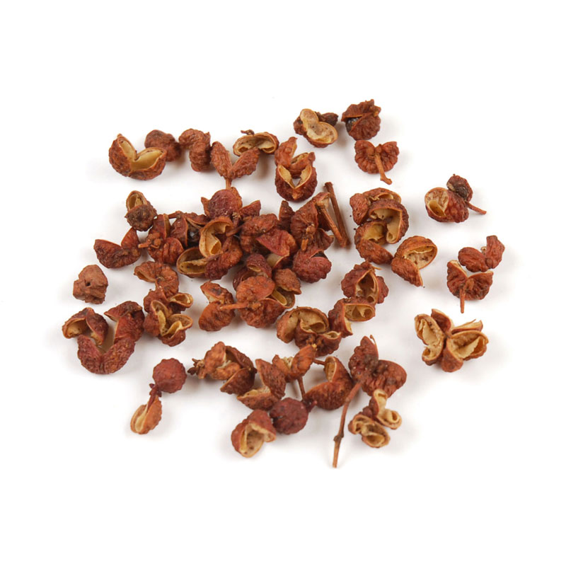

green beans with garlic and sichuan peppercorns
a hot salad
- green beans
- garlic, finely chopped
- salt
- sichuan peppercorns
- soy

- Toast peppercorns first in hot dry pan. Remove them.
- fry green beans with a little oil, salt and peppercorns till they go soft and start to blister and blacken on the outside. You may want to put a lid on the pan for this bit as it can get smoky and oil can sizzle a lot.
- add in splash of soy, garlic (and a little bit of water), fry fast until the liquid disappears then serve.